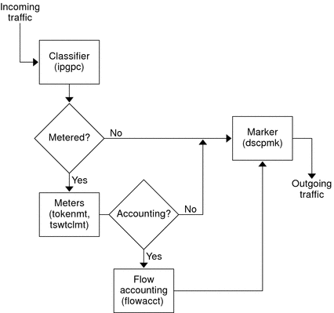

|
|||
|
1. Solaris TCPIP Protocol Suite (Overview) 2. Planning an IPv4 Addressing Scheme (Tasks 3. Planning an IPv6 Addressing Scheme (Overview) 4. Planning an IPv6 Network (Tasks) 5. Configuring TCP/IP Network Services and IPv4 Addressing (Tasks) 6. Administering Network Interfaces (Tasks) 7. Enabling IPv6 on a Network (Tasks) 8. Administering a TCP/IP Network (Tasks) 9. Troubleshooting Network Problems (Tasks) 10. TCP/IP and IPv4 in Depth (Reference) 12. About Solaris DHCP (Overview) 13. Planning for DHCP Service (Tasks) 14. Configuring the DHCP Service (Tasks) 15. Administering DHCP (Tasks) 16. Configuring and Administering DHCP Clients 17. Troubleshooting DHCP (Reference) 18. DHCP Commands and Files (Reference) 19. IP Security Architecture (Overview) 21. IP Security Architecture (Reference) 22. Internet Key Exchange (Overview) 24. Internet Key Exchange (Reference) 25. Solaris IP Filter (Overview) 28. Administering Mobile IP (Tasks) 29. Mobile IP Files and Commands (Reference) 30. Introducing IPMP (Overview) 31. Administering IPMP (Tasks) Part VI IP Quality of Service (IPQoS) 32. Introducing IPQoS (Overview) Providing Quality of Service With IPQoS Improving Network Efficiency With IPQoS Traffic Forwarding on an IPQoS-Enabled Network 33. Planning for an IPQoS-Enabled Network (Tasks) 34. Creating the IPQoS Configuration File (Tasks) 35. Starting and Maintaining IPQoS (Tasks) 36. Using Flow Accounting and Statistics Gathering (Tasks) |
Differentiated Services ModelIPQoS includes the following modules, which are part of the Differentiated Services (Diffserv) architecture that is defined in RFC 2475:
IPQoS adds the following enhancements to the Diffserv model:
This section introduces the Diffserv modules as they are used by IPQoS. You need to know about these modules, their names, and their uses to set up the QoS policy. For detailed information about each module, refer to IPQoS Architecture and the Diffserv Model. Classifier (ipgpc) OverviewIn the Diffserv model, the classifier selects packets from a network traffic flow. A traffic flow consists of a group of packets with identical information in the following IP header fields: In IPQoS, these fields are referred to as the 5-tuple. The IPQoS classifier module is named ipgpc. The ipgpc classifier arranges traffic flows into classes that are based on characteristics you configure in the IPQoS configuration file. For detailed information about ipgpc, refer to Classifier Module. IPQoS ClassesA class is a group of network flows that share similar characteristics. For example, an ISP might define classes to represent the different service levels that are offered to customers. An ASP might define SLAs that give different levels of service to various applications. For an ASP's QoS policy, a class might include outgoing FTP traffic that is bound for a particular destination IP address. Outgoing traffic from a company's external web site might also be defined as a class. Grouping traffic into classes is a major part of planning your QoS policy. When you create classes by using the ipqosconf utility, you are actually configuring the ipgpc classifier. For information on how to define classes, see How to Define the Classes for Your QoS Policy. IPQoS FiltersFilters are sets of rules that contain parameters called selectors. Each filter must point to a class. IPQoS matches packets against the selectors of each filter to determine if the packet belongs to the filter's class. You can filter on a packet by using a variety of selectors, for example, the IPQoS 5-tuple and other common parameters:
For example, a simple filter might include the destination port with the value of 80. The ipgpc classifier then selects all packets that are bound for destination port 80 (HTTP) and handles the packets as directed in the QoS policy. For information on creating filters, see How to Define Filters in the QoS Policy. Meter (tokenmt and tswtclmt) OverviewIn the Diffserv model, the meter tracks the transmission rate of traffic flows on a per-class basis. The meter evaluates how much the actual rate of the flow conforms to the configured rates to determine the appropriate outcome. Based on the traffic flow's outcome, the meter selects a subsequent action. Subsequent actions might include sending the packet to another action or returning the packet to the network without further processing. The IPQoS meters determine whether a network flow conforms to the transmission rate that is defined for its class in the QoS policy. IPQoS includes two metering modules: Both metering modules recognize three outcomes: red, yellow, and green. You define the actions to be taken for each outcome in the parameters red_action_name, yellow_action_name, and green_action_name. In addition, you can configure tokenmt to be color aware. A color-aware metering instance uses the packet's size, DSCP, traffic rate, and configured parameters to determine the outcome. The meter uses the DSCP to map the packet's outcome to a green, yellow, or red. For information on defining parameters for the IPQoS meters, refer to How to Plan Flow Control. Marker (dscpmk and dlcosmk) OverviewIn the Diffserv model, the marker marks a packet with a value that reflects a forwarding behavior. Marking is the process of placing a value in the packet's header to indicate how to forward the packet to the network. IPQoS contains two marker modules:
For information on implementing a marker strategy for the QoS policy, see How to Plan Forwarding Behavior. Flow Accounting (flowacct) OverviewIPQoS adds the flowacct accounting module to the Diffserv model. You can use flowacct to gather statistics on traffic flows, and bill customers in agreement with their SLAs. Flow accounting is also useful for capacity planning and system monitoring. The flowacct module works with the acctadm command to create an accounting log file. A basic log includes the IPQoS 5-tuple and two additional attributes, as shown in the following list:
You can also gather statistics on other attributes, as described in Recording Information About Traffic Flows, and in the flowacct(7ipp) and acctadm(1M) man pages. For information on planning a flow-accounting strategy, see How to Plan for Flow Accounting. How Traffic Flows Through the IPQoS ModulesThe next figure shows a path that incoming traffic might take through some of the IPQoS modules. Figure 32-1 Traffic Flow Through the IPQoS Implementation of the Diffserv ModelThis figure illustrates a common traffic flow sequence on an IPQoS-enabled machine:
|
||
|